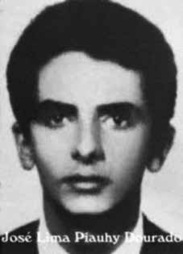

José
Lima
Piauhy
Dourado
CIRCUNSTÂNCIAS DA MORTE
Segundo o Relatório Arroyo, José Lima Piauhy Dourado não estava no acampanhamento militar no epsódio conhecido como Chafurdo de Natal, tendo saído, na companhia de Cilon da Cunha Brum, no dia 25/12/1973 para encontrar outros companheiros. Há, ainda, a referência de que no dia 28/12/1973 José Maurílio Patrício e Suely Yumiko Kanayama saíram para encontrá-los em um ponto na área no destacamento B, o que deveria acontecer no dia 30/12/1973. De acordo com o Relatório da CEMDP, moradores da região afirmam que o guerrilheiro foi emboscado pelo Exército, sendo atingido por um tiro na cabeça e enterrado na localidade conhecida como Formiga. Ainda segundo o relatório CEMDP, “nas fichas entregues ao jornal O Globo, em 1996, consta a anotação de que foi preso em 25/1/1974 e morto na mesma data”. No relatório produzido pelo Centro de Informações do Exército (CIE), em 1975, José consta preso no dia 23/1/1974. Já o Relatório da Marinha, entregue ao ministro da Justiça Mauricio Corrêa, em 1993, indica que a data de sua morte como 24/12/1973.
According to the Arroyo Report, José Lima Piauhy Dourado was not in the military campaign in the episode known as Natal Wallowing, having left, in the company of Cilon da Cunha Brum, on 12/25/1973 to meet other companions. There is also a reference that on 12/28/1973 José Maurílio Patrício and Suely Yumiko Kanayama went out to meet them at a point in the area in detachment B, which should have happened on 12/30/1973. According to the CEMDP Report, residents of the region claim that the guerrilla was ambushed by the Army, shot in the head and buried in the location known as Formiga. Also according to the CEMDP report, “in the files delivered to the newspaper O Globo, in 1996, there is a note that he was arrested on 1/25/1974 and killed on the same date”. In the report produced by the Army Information Center (CIE), in 1975, José was arrested on 1/23/1974. The Navy Report, delivered to the Minister of Justice Mauricio Corrêa, in 1993, indicates the date of his death as 12/24/1973.
Según el Informe Arroyo, José Lima Piauhy Dourado no se encontraba en la campaña militar en el episodio conocido como Revolcadero de Natal, habiendo salido, en compañía de Cilon da Cunha Brum, el 25/12/1973 para encontrarse con otros compañeros. También hay referencia de que el 28/12/1973 José Maurílio Patrício y Suely Yumiko Kanayama salieron a su encuentro en un punto de la zona del Destacamento B, lo que debió ocurrir el 30/12/1973. Según el Informe del CEMDP, vecinos de la región afirman que el guerrillero fue emboscado por el Ejército, baleado en la cabeza y enterrado en el lugar conocido como Formiga. También según el informe del CEMDP, “en los expedientes entregados al periódico O Globo, en 1996, consta que fue detenido el 25/01/1974 y asesinado en la misma fecha”. En el informe elaborado por el Centro de Información del Ejército (CIE), en 1975, José fue detenido el 23/01/1974. El Informe de la Marina, entregado al Ministro de Justicia Mauricio Corrêa, en 1993, indica la fecha de su muerte como 24/12/1973.